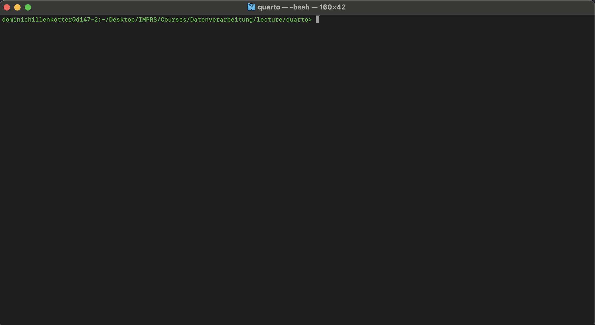

gitGraph commit id: "df21a: Initial commit"
Download and Install GIT https://git-scm.com/downloads/win
Command Line Interface ?Command Line Interface (CLI)bash shell bash/Power shellBash developed in 1989 by Brian Fox wirtten in C
Powershell developed by Microsoft in 2006.
bashFind and rename all files which are of type .nc
Task
Find
Rename
GUI
easy
teadious
Terminal
easy
easy
You can use GitHub Copilot/ChatGPT/… to write the command for you
❗️But you should understand what the command does❗️
~ equivalent to /Users/dominichillenkotterUse pwd to see the present work directory
mkdir to make directory
create a file
🥱
Making a whoopsy
Create a file create.sh
They should be named file_1.txt, file_2.txt, … not test_1.txt, test_2.txt, …
Rename a file by move it mv
Can also be used for actual moving
Typing in all the names is not an option
How can we automate this ?
Create a file rename.sh
bash is a powerful toolbash is a tool to interact with the computerbash can be used to automate tasksbash can be used to interact with remote computersmkdir my_repo
cd my_repo
git init . # Initialize a repository
git add . # Add the whole directory content (don't do that)
git commit -m "Initial commit" # Commit your changesgitGraph commit id: "df21a: Initial commit"
Commits are linked to form a sequence of snapshots:
gitGraph commit id: "df21a: Initial commit" commit id: "315f2: add world"
Git offers plenty of functionality that is extensively documented
You will only need a handful of commands in your day to day work:
Each commit is attributed to an author
The concept or authorship is heavily used on other platforms (e.g. GitLab)
Basically Yes!
But only if you are working alone and you don’t want to test something.
Create a branch develop to work on a feature
gitGraph commit commit branch develop checkout develop commit commit
Merge the commits of develop into main
gitGraph commit commit branch develop checkout develop commit commit checkout main merge develop
Collaboration can lead to disagreements
This creates a conflict when merging both branches
gitGraph commit commit branch alice checkout alice commit checkout main branch bob checkout main merge alice checkout bob commit checkout main merge bob
Solving conflicts requires your decision
Solving conflicts requires your decision
Commits should deal with only one task; one logical unit
Write meaningful commit messages
ice: Fix freeing uninitialized pointers
Automatically cleaned up pointers need to be initialized before exiting
their scope. In this case, they need to be initialized to NULL before
any return statement.
Fixes: 90f821d72e11 ("ice: avoid unnecessary devm_ usage")
Signed-off-by: Dan Carpenter <dan.carpenter@linaro.org>
Reviewed-by: Jiri Pirko <jiri@nvidia.com>
Reviewed-by: Simon Horman <horms@kernel.org>
Signed-off-by: Tony Nguyen <anthony.l.nguyen@intel.com>Example from kernel.org
Adding a remote repository
List the available remotes
Push your local references to the remote repo
Pull remote changes to your local repo
Adding a remote repository
List the available remotes
Push your local references to the remote repo
Pull remote changes to your local repo
Instead of merging branches, one can also rebase
%%{init: {'gitGraph': {'showCommitLabel': false}} }%%
gitGraph
commit
commit
branch develop
checkout develop
commit
commit
checkout main
commit
%%{init: {'gitGraph': {'showCommitLabel': false}} }%%
gitGraph
commit
commit
commit
branch develop
checkout develop
commit
commit
Rebasing retains a linear history
by changing the commit history (!!!)
A fork is a copy of a repository on server side
Used to work on public repositories without granting ownership
Standard names for locally defined remotes:
VSCode, meld